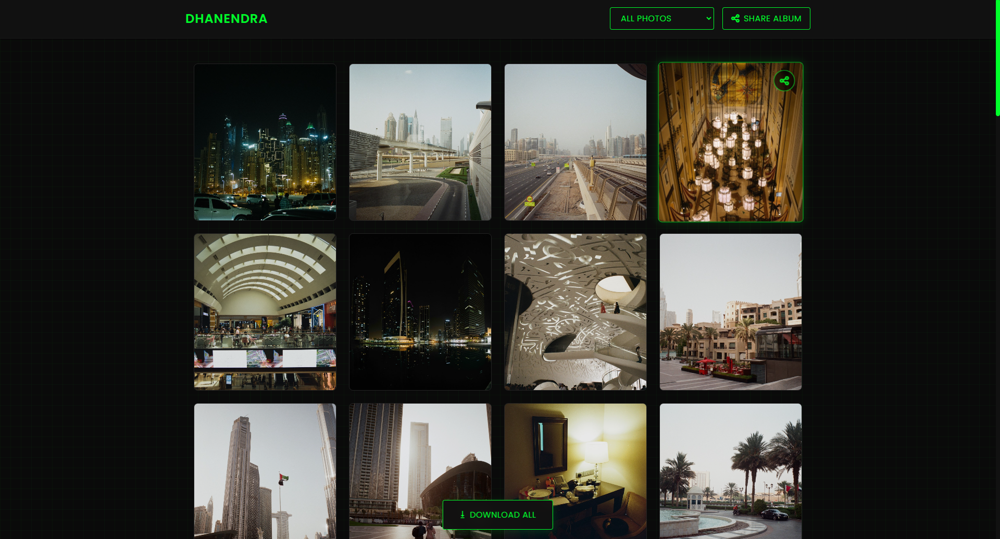

NOV - Measurement While Drilling (MWD)

Hands-on work in the Directional Drilling Technology unit supporting MWD tool inspection, calibration, zeroing, and RFD telemetry testing. Built internal utilities for ECD computation and timestamp automation.
DAVO - Directional Survey Automation

Python-based report processing tool to annotate timestamps and compute ECD values in directional survey PDFs. Built using Tkinter + PyMuPDF.
WPA2 Pen-Test Toolkit

Toolkit for PMKID / 4-Way Handshake capture + automated cracking workflows using Hashcat. Designed for SECULAB wireless security research.
Web Gallery
Dynamic gallery site built with vanilla JS and directory indexing automation.
Reaction Time Game (STM32)

Microcontroller-based reflex testing game using STM32 Blue Pill.
Smart Parking System (Verilog)

Sensor-driven parking management logic implemented in Verilog.
UKM Kalimantan Website
Dynamic profile & content management website for campus organization.
Homelab Infrastructure
Proxmox-based lab hosting self-contained apps exposed securely via Cloudflared tunnels.
Cloud Computing Deployment
Kubernetes microservices deployment with autoscaling, monitored via Grafana/Prometheus.